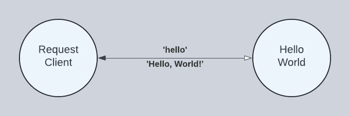
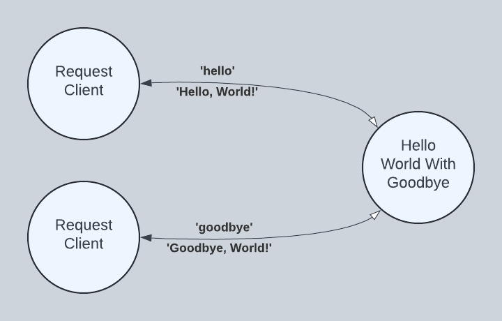

Hello, World!
In this section, we learn how to create and run simple Torq programs.
HelloWorld
The fundamental unit of concurrency in Torq is the actor. In our diagram below, RequestClient and HelloWorld are actors that run concurrently with the potential to run in parallel. RequestClient sends a 'hello' message to HelloWorld, and in response, HelloWorld sends a 'Hello, World!' message to RequestClient. Note the sold line arrow. The labels are read clockwise, so that we say 'hello' is sent from RequestClient to HelloWorld and 'Hello, World!' is sent from HelloWorld to RequestClient. The open arrow points toward the recipient of the request and the closed arrow points toward the recipient of the response, the terminus of our interaction.

Programming HelloWorld
HelloWorld is defined beginning with the actor keyword. Following the actor keyword is the name HelloWorld. An actor can accept parameters that affect how it is configured. In our case, there are no parameters. Next, the actor requires that a body be defined between enclosing in and end keywords. The HelloWorld actor contains just one statement in its body, an ask handler, specified as handle ask 'hello' in ... end.
actor HelloWorld() in
handle ask 'hello' in
'Hello, World!'
end
end
Our ask handler is programmed to receive 'hello' messages one at a time. If additional 'hello' messages are received while one is being processed, they are queued until HelloWorld is ready to receive another. Like our actor, our ask handler requires that a body be defined between enclosing in and end keywords. Our ask handler contains a single expression in its body, the 'Hello, World!' string literal. By convention, an ask handler returns the last expression as its result.
Running HelloWorld
Torq is a dynamic language run on the JVM. In this section, we place our source into a Java String literal. With our source defined, we build and execute our program from Java using a fluent builder tool.
public static final String SOURCE = """
actor HelloWorld() in
handle ask 'hello' in
'Hello, World!'
end
end""";
public static void perform() throws Exception {
// Build and spawn HelloWorld. After spawning, HelloWorld is waiting to
// receive the 'hello' message. The spawn method returns an actorRef used
// subsequently to send it messages.
ActorRef actorRef = Actor.builder()
.spawn(SOURCE);
// Send the 'hello' message to the actor reference returned above. Wait a
// maximum of 100 milliseconds for a response.
Object response = RequestClient.builder()
.sendAndAwaitResponse(actorRef, Str.of("hello"), 100, TimeUnit.MILLISECONDS);
checkExpectedResponse(Str.of("Hello, World!"), response);
}
Click org.torqlang.examples.HelloWorld.java to see the full source code on GitHub.
HelloWorldWithGoodbye
In our HelloWorldWithGoodbye diagram, we extend HelloWorld with a 'goodbye' handler. We use two instances of RequestClient to send two different requests to just one instance of HellWorldWithGoodbye. This demonstrates a long-running actor servicing different requests from multiple clients.

Programming HelloWorldWithGoodbye
actor HelloWorld() in
handle ask 'hello' in
'Hello, World!'
end
handle ask 'goodbye' in
'Goodbye, World!'
end
end
Running HelloWorldWithGoodbye
public static final String SOURCE = """
actor HelloWorld() in
handle ask 'hello' in
'Hello, World!'
end
handle ask 'goodbye' in
'Goodbye, World!'
end
end""";
public static void perform() throws Exception {
// Build and spawn HelloWorld. After spawning, HelloWorld is waiting to
// receive the 'hello' or 'goodbye' message. The spawn method returns an
// actorRef used subsequently to send it messages.
ActorRef actorRef = Actor.builder()
.spawn(SOURCE);
// Send the first message -- 'hello'
Object response = RequestClient.builder()
.sendAndAwaitResponse(actorRef, Str.of("hello"), 100, TimeUnit.MILLISECONDS);
checkExpectedResponse(Str.of("Hello, World!"), response);
// Send the second message -- 'goodbye'
response = RequestClient.builder()
.sendAndAwaitResponse(actorRef, Str.of("goodbye"), 100, TimeUnit.MILLISECONDS);
checkExpectedResponse(Str.of("Goodbye, World!"), response);
}
Summary
In this section, we learned:
- How to program concurrent actors
- How to run an actor program from Java
- How to use a concurrent actor to service multiple requests